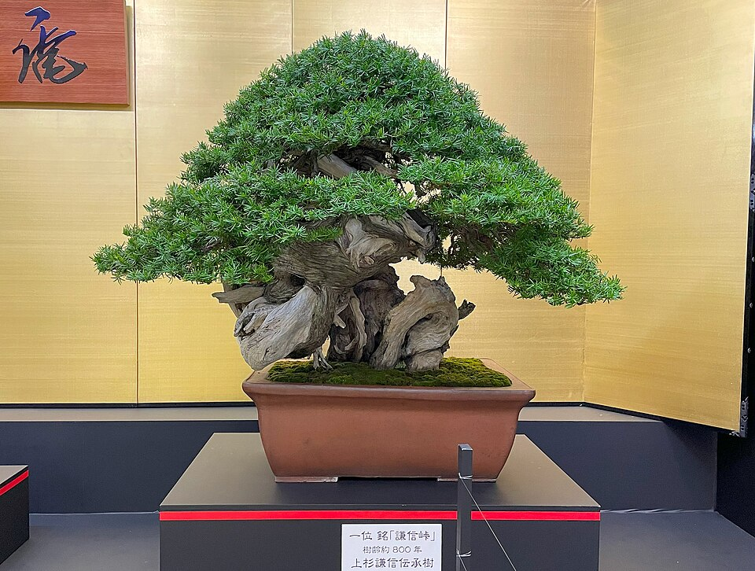
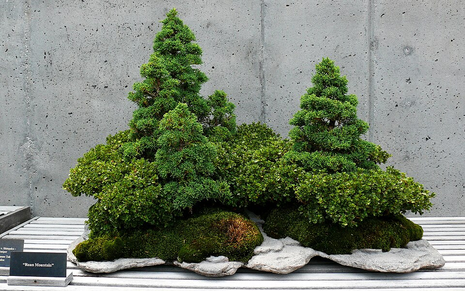
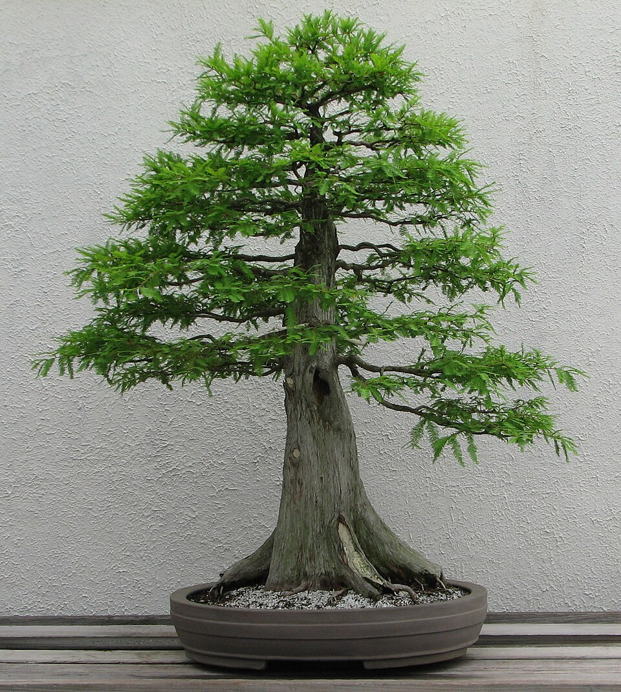
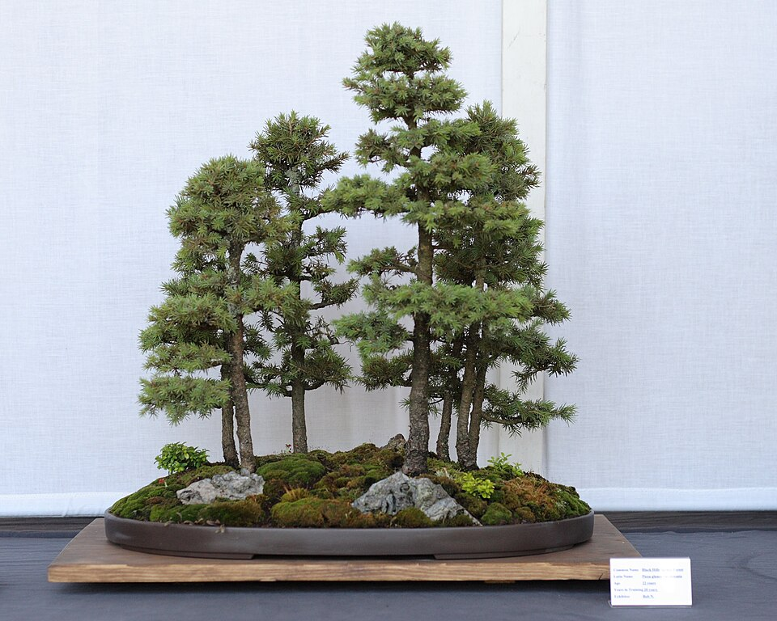
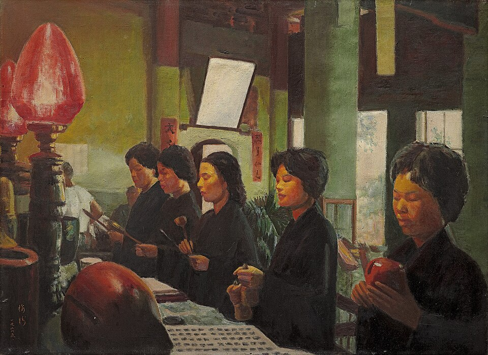

🌱 Why Bonsai Transforms the Observer
Bonsai is not merely horticulture. It is a philosophy made visible: the art of cultivating miniature trees that mirror the grandeur of nature, through patience, restraint, and deep attention.
In a world that celebrates speed and scale, bonsai invites us to slow down, to find infinity in a single leaf, and to honor the quiet passage of time. Each curve of a branch, each placement of a stone, tells a story of collaboration between human intention and natural growth.
🍃 Lessons from the Miniature Forest
Patience
A bonsai may take decades to reach its form. Growth cannot be forced—only guided with gentle consistency.
Restraint
Beauty emerges not from excess, but from knowing what to remove. Every cut is a decision.
Harmony
The tree, pot, and landscape form a unified composition. Nothing stands alone.
Impermanence
Even the oldest bonsai changes with seasons. Accepting flux is part of the practice.
🎋 Cultural Roots & Quiet Respect
Bonsai emerged from Chinese penjing and was refined in Japan over centuries. It reflects core aesthetic principles: wabi-sabi (beauty in imperfection), ma (the power of empty space), and shibui (subtle, unobtrusive elegance).
This page is offered with deep respect for the cultures that nurtured this art. It is not an appropriation, but an invitation to observe, reflect, and perhaps find a moment of stillness in your own life.
🐺 A Cultural Bridge: Blue Wolves of Mibu
For those who discover bonsai through story: the anime The Blue Wolves of Mibu weaves historical drama with subtle references to Japanese aesthetics, including the patience and discipline echoed in bonsai practice.
Whether you arrive through art, animation, or quiet curiosity—may this page be a resting point, not a destination.
📸 Bonsai Archive






